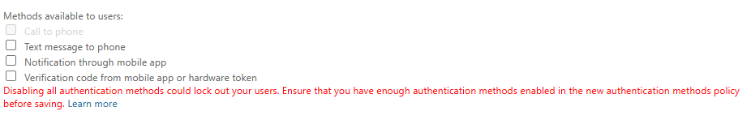
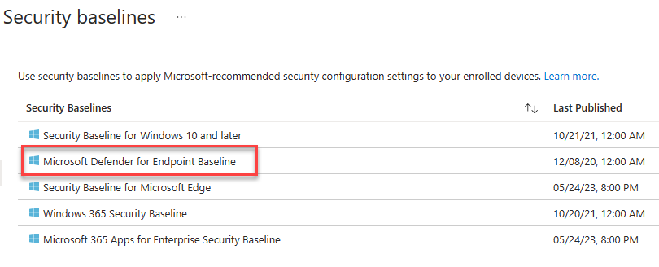

Fresh Tenant Setup
These are the steps I typically take to set up a fresh M365 E5 tenant.
Work in Progress
This is very much a continuous work in progress. I publish changes as I go. Screenshots might be out of date.
Use at your own risk
These are my personal steps. This should not be construed as official guidance. Always refer to the official Microsoft documentation available at learn.microsoft.com
Entra¶
Entra Cloud Sync¶
 Portal
Portal Docs
DocsCloud Sync is the lightweight replacement for AAD Connect. Follow the instructions in the Docs link for a step-by-step example for a single forest install.
For conditional access, be sure to exclude the Directory Synchronization Accounts role from any MFA policies.
Hybrid Cloud Trust¶
Create EntraID Kerberos Server
# Install the AzureADHybridAuthenticationManagement module
Install-Module -Name AzureADHybridAuthenticationManagement -AllowClobber
# Specify the on-premises Active Directory domain. A new Azure AD
# Kerberos Server object will be created in this Active Directory domain.
$domain = "contoso.com"
# Enter a UPN of an Azure Active Directory global administrator
$userPrincipalName = "admin@contoso.com"
# Enter a domain administrator username and password.
$domainCred = Get-Credential
# Create the new Azure AD Kerberos Server object in Active Directory
# and then publish it to Azure Active Directory.
# Open an interactive sign-in prompt with given username to access the Azure AD.
Set-AzureADKerberosServer -Domain $domain -UserPrincipalName $userPrincipalName -DomainCredential $domainCred
# Verify server
Get-AzureADKerberosServer -Domain $domain -DomainCredential $domainCred -UserPrincipalName $userPrincipalName
Id : 17530
UserAccount : CN=krbtgt_AzureAD,CN=Users,DC=contoso,DC=com
ComputerAccount : CN=AzureADKerberos,OU=Domain Controllers,DC=contoso,DC=com
DisplayName : krbtgt_17530
DomainDnsName : contoso.com
KeyVersion : 27591
KeyUpdatedOn : 10/13/2022 9:23:43 PM
KeyUpdatedFrom : CONTOSO-DC-01.contoso.com
CloudDisplayName : krbtgt_17530
CloudDomainDnsName : contoso.com
CloudId : 17530
CloudKeyVersion : 27591
CloudKeyUpdatedOn : 10/13/2022 9:23:43 PM
CloudTrustDisplay :
Device Settings¶
- Disable adding GA to local admin.
App Registrations¶
MS Graph PowerShell SDK¶
To enable use of the MS Graph PowerShell SDK, create an app registration for app-only for use with the SDK.
- Create the app registration.
- Grant application permissions for Microsoft Graph that are necessary for your use cases.
- I prefer to do app consent cert-based authentication. Here's a couple of links explaining the process:
Identity Protection¶
Self Service Password Reset¶
- Enable Self service password reset
- Target a group that excludes service accounts. Easiest way to do this is with a dynamic group. Example rule:
(user.displayName -ne "On-Premises Directory Synchronization Service Account") and (user.userPrincipalName -notStartsWith "svc") - Enable Password writeback in On-premises integration
Authentication Methods¶
Policies¶
For methods, enable
- Passkeys
- Authenticator
- Enable FIDO2, Authenticator, Temporary Access Pass in Authentication Methods
Authentication Methods Migration¶
- Disable verification options in the legacy MFA settings portal
 - Disable Authentication methods in SSPR Authentication Methods

- Migrate to the Converged Authentication Methods Policy

User Settings¶
- Toggle Off
- Users can register Applications
- Show keep user signed in
- Toggle On
- Restrict non-admin users from creating tenants
- Restrict access to Entra ID administration portal

User Feature Settings¶
- Select All for Users can use preview features for My Apps
Device Settings¶
Cloud LAPS¶
- Enable LAPS
Enterprise State Roaming¶
- Enable Enterprise State Roaming

Identity Protection¶
Multifactor authentication registration policy¶
- Create a EntraID group called Service Accounts, add the Entra Cloud sync account
- Enable the policy, targeting all users and excluding the group you just created.

Diagnostic Settings¶
Prior to doing so, create a Log Analytics workspace and add Sentinel to it.
- Enable all diagnostic settings to log to your Sentinel's log analytics workspace

Global Secure Access¶
Enable GSA¶
Click Activate to enable GSA in your tenant
Internet Access¶
- Enable the Microsoft Profile
- Download the GSA Client and deploy to Windows devices.
Active Directory¶
Deploy 3 VMs
- 2 Domain Controllers running 2022
- 1 2022 Server for Entra Cloud Sync
Intune¶
Tenant Administration Settings¶
Windows Data Connector¶
Defender for Endpoint Connector¶
You need to enable the Defender side first.
Windows Autopatch¶
- Run the prereq check. You'll see an advisory for co-management, this can be safely disregarded.
- Grant admin access for Microsoft
- Provide Admin contact info.
- Add devices to the the default autopatch group
Windows Autopatch Device Registration - Wait a few minutes, then ensure the devices show in the Windows Autopatch devices here
- Put a couple of devices in the Test ring by clicking on the device name, then selecting Device Actions -> Assign Ring. In the flyout, choose the Test ring

Applications¶
Windows¶
Add app -> Microsoft 365 Apps for Windows 10 and Later. Assign to all devices.


Devices¶
Windows Automatic Enrollment¶
- Set MDM and MAM user scopes to all

Windows Autopilot¶
Follow this guide: Overview for Windows Autopilot device preparation user-driven Microsoft Entra join in Intune | Microsoft Learn
Prereqs:
- Create Entra Groups
- Automatic Enrolment Set
- Enrolled devices. Windows Autopilot device preparation devices
- Set App ID f1346770-5b25-470b-88bd-d5744ab7952c as the owner.
- Targeted Users - Windows Autopilot device preparation users
- Create/update an Office deployment, target the device group created above.
Create a device prep policy

iOS Enrollment¶
User-driven iOS enrollment is a two step process - the push certificate and the enrollment profile.
Configure Apple MDM Push Certificate¶
Enrollment Profile¶
Native iOS enrollment
There's this nifty-keen account driven user enrollment available in iOS 15+, but you'll need a web server to serve up the json file Apple expects.
- Configure an enrollment profile
- Create a profile that allows user choice of type of device (corporate vs user), target all users.

Supervised iOS Enrollment with Apple Configurator¶
There are two options for Apple Config profile - with user affinity and without. For testing, enrollment with User Affinity with the Company Portal app mimics how devices might be distributed to end users.
- Create a new Enrollment Profile. On the settings step, select:
User affinity:Enroll with User Affinity
Select where users must authenticate:Company Portal - Export the profile you just created. Copy the URL.
- Create a csv file with the serial numbers of iPads you wish to enroll.
Serial number,device details - Upload the csv file in the portal under Devices. Assign the profile you just created.
- In Apple Configurator, choose Settings -> Servers. Click + to add a server. Add the URL you copied from step 2.

- Connect a device, and at the main screen, click Prepare. Leave the default options unchanged.
- Choose the Intune MDM server defined in Step 5.

- Skip Apple Business Manager sign-in if prompted. At the Organization screen select a previous org or create a new one. This is shown in the settings app in iOS.
- Choose to generate a new supervision Identity or reuse an existing one.
- Choose which steps to display in the Setup Assistant. Click Prepare to start the process.
Android Enrollment¶
User-driven Android enrollment is a two step process - the managed Google Play account linking and the enrollment profile.
Managed Google Play Account Linking¶

MacOS Enrollment¶
As with MDE for MacOS, this tends to change, so be sure to check the docs for the most recent steps.
:material-head-sync: tl;dr
- Create a MacOS enrollment profile here if you didn't for iOS yet - they're shared between iOS and MacOS.
- Download the Company Portal app for MacOS from here and deploy the company portal app as a MacOS LOB app
{kind=link}
MacOS Platform SSO¶
Use the instructions here as a guide.
tl;dr
Use the settings below in a config profile to deploy platform sso with the following options:
- Password authentication which syncs the Entra password with the local account password
- Create new users as admins
Endpoint security¶
Windows¶
- Endpoint Detection and Response
- Create a new EDR policy targeting Windows. Target all devices.

- Antivirus
- Create a new Microsoft Defender Antivirus profile
- Enable Network Protection in Block mode. Target all devices.
MacOS¶
Deploying MDE on MacOS is a multi-step manual process, and changes occasionally. Refer to Intune-based deployment for Microsoft Defender for Endpoint on Mac - Microsoft Defender for Endpoint | Microsoft Learn for the most current steps.
tl;dr
If you want a sample combined deployment, I've combined mobileconfig files here to set the following settings
- AutoUpdate enabled, broad channel
- Network protection set to block
-
All other required mobileconfig settings, such as full disk access, etc.
-
Deploy the combined profile
- Create a device configuration profile for macOS devices using a custom template
- For configuration settings, upload the mobileconfig from above. Target device channel.
- Target all MacOS devices
- Deploy MDE
- Deploy the MDE packageMDE App in Intune
- Deploy the Onboarding Package
- Download the MDM/Intune onboarding package from Defender XDR

- Deploy via Intune as a Custom Config template
Security Baselines¶
- Create a new Microsoft Defender for Endpoint Baseline policy and target all devices.

Account Protection (LAPS)¶
- Enable LAPS in the portal
- Create a Windows LAPS profile and apply to all devices.

M365 Defender¶
XDR¶
- Enable unified SIEM and XDR.

Email & collaboration¶
- Peset Security Configuration Policies
-
Enable Standard Protection Preset Policies.


MDCA¶
- System
- IP Address Ranges
- If you have IP Ranges as Trusted Named Locations in EID, add them as Custom IP Address Ranges in MDCA with the category of Corporate

- If you have IP Ranges as Trusted Named Locations in EID, add them as Custom IP Address Ranges in MDCA with the category of Corporate
- Cloud Discovery
- Defender for Endpoint
- Enforce App Access with Defender for Endpoint

- Enforce App Access with Defender for Endpoint
- User Enrichment
- Enable User Enrichment

- Enable User Enrichment
- Information Protection
- Microsoft Information Protection
- Enable automatically scan new files
- Enable scanning protected files. You'll need to go through the OAUTH grant process.

- Files
- Enable file monitoring

- Enable file monitoring
- App governance
- Service Status
- Turn on app governance

- Turn on app governance
- Connected Apps
- App Connectors
- Click Connect an app, choose Microsoft 365 from the list. Select all options.

- Click Connect an app, choose Microsoft 365 from the list. Select all options.
- SIEM Agents
- Add the Azure Sentinel integration


Endpoints¶
- Advanced Features
- Ensure your settings match those below:
Identities¶
- Sensors
- Click +Add Sensor, and download the installer and copy the Access key

- Install the sensor on all DCs in AD. Use the access key when prompted by the installer.

- Active Directory
- Configure Event Collection via GPO
-
Configure Group Managed Service Account account
- On the first DC
-
Create root KDS key
-
Purge kerberos tickets
- Create the gMSA
New-ADServiceAccount accountname -PrincipalsAllowedToRetrieveManagedPassword "Domain Controllers" -DNSHostName accountname.domain.contoso.com- Install the gMSA on the DC
- On the other DCs, purge kerberos tickets and install the service account
- Add the gMSA in the portal

- Add the gMSA in the portal
Purview¶
Advanced Audit¶
- Enable Auditing
-
With the ExchangeOnlineManagement module in PS5/PS7+
Device Onboarding¶
- Enable Windows and Mac device onboarding. This requires MDE.
Sensitivity Labels¶
Enable labeling for Protected content & PDFs¶
 Enable Sensitivity Labels for Protected Content
Enable Sensitivity Labels for Protected Content
Enable labeling support for PDFs
- Enable labeling for Protected content & PDFs
-
Using the SharePoint Module in PowerShell 5
Enable Labeling for Containers¶
In a fresh tenant, there will not be any EntraID group settings configured, so those need to be created. Then enable labeling for containers. After that, you can enable the label sync.
-
With the Graph SDK in PS7+
Connect-MgGraph -Scopes "Directory.ReadWrite.All" $TemplateId = (Get-MgBetaDirectorySettingTemplate | where { $_.DisplayName -eq "Group.Unified" }).Id $params = @{ templateId = "$TemplateId" values = @( @{ name = "EnableMIPLabels" value = "True" } ) } New-MgBetaDirectorySetting -BodyParameter $params -
With the ExchangeOnlineManagement module in PS5/PS7+
Enable co-authoring for Encrypted Files¶
This can be done in the portal, or via PowerShell.
-
With the ExchangeOnlineManagement module in PS5/PS7+
Implement Secure by Default Labeling¶
Follow the guide here
DLP¶
Endpoint DLP¶
Settings¶
In Settings, change the following:
- Advanced classification scanning and protection:
On
MIP Scanner¶
Prerequisite
- Service account in AD, exclude from MFA registration and CAs
- SQL server for the scanner, as well as a windows server.
Deployment
- Create a Scanner Cluster

- Create a Content Scan Job. Be sure to disable any of the auto options - this will just be for scanning.

Exact Data Match¶
EDM SIT¶
- Create a new EDM SIT. Since I work in healthcare, I typically use Synthea to generate patient records. We do have sample industry files you can use.
- Make note of the datastore name when you finish the EDM wizard. You'll need it for the EDM uploader.
EDM Uploader Tool¶
- Create a service account for the EDM upload agents to run as.
- Create a EntraID security group named
EDM_DataUploadersand add the service account to it. - Install the EDM upload tool to
c:\EDM - Place sample data in
c:\EDM\Data - Save the schema
.\EdmUploadAgent.exe /SaveSchema /DataStoreName your_data_store_name /OutputDir c:\edm\data - Create
c:\EDM\hash - Upload the data
.\EdmUploadAgent.exe /uploaddata /datastorename your_data_store_name /datafile C:\edm\data\your_data.csv /hashlocation c:\edm\hash /schema C:\edm\data\your_data_store_name.xml /allowedbadlinespercentage 5
Insider Risk Management¶
Work in Progress
This section is not complete.
Roles¶
- Add your account to the
Insider Risk Managementrole. - Create a role group called
Data Connector Admins, add theData Connector Adminrole to it and add your account to the role group.
Browser Activity Plugins¶
- Deploy the Edge profile via Intune as described here
- Deploy the Chrome profile via Intune as described here
HR Connector¶
- Create an Entra App Registration with Client Secret
Settings¶
- Analytics
- Toggle analytics on
- Data sharing
- Enable share data with Defender XDR
- Policy indicators
- Select all indicators under the following categories
- Office
- Microsoft Defender for Cloud Apps
- Cumulative exfiltration detection
- Risk score boosters
- Generative AI Apps
- Microsoft Copilot Experiences
- Microsoft Entra
- Risk Detection indicators
Analytics¶
- Toggle analytics on
Policy Indicators¶
- Select all indicators under the following categories
- Office
- Device
- Microsoft Defender for Endpoint
- Risky Browsing
- Microsoft Defender for Cloud Apps
Adaptive Protection¶
- Turn on adaptive protection with the quick setup option
- Wait for that to process. Once complete, go back and enable Adaptive Protection under Adaptive Protection settings
Polices¶
- Create a Data Leaks policy from the template

- Target all users
- Choose not to prioritize content.

- For triggering events, choose
User performs an exfiltration activity - For thresholds, choose
Apply built-in thresholds. - For indicators, leave the default ones checked.
Communication Compliance¶
- Grant Teams meeting recording access.